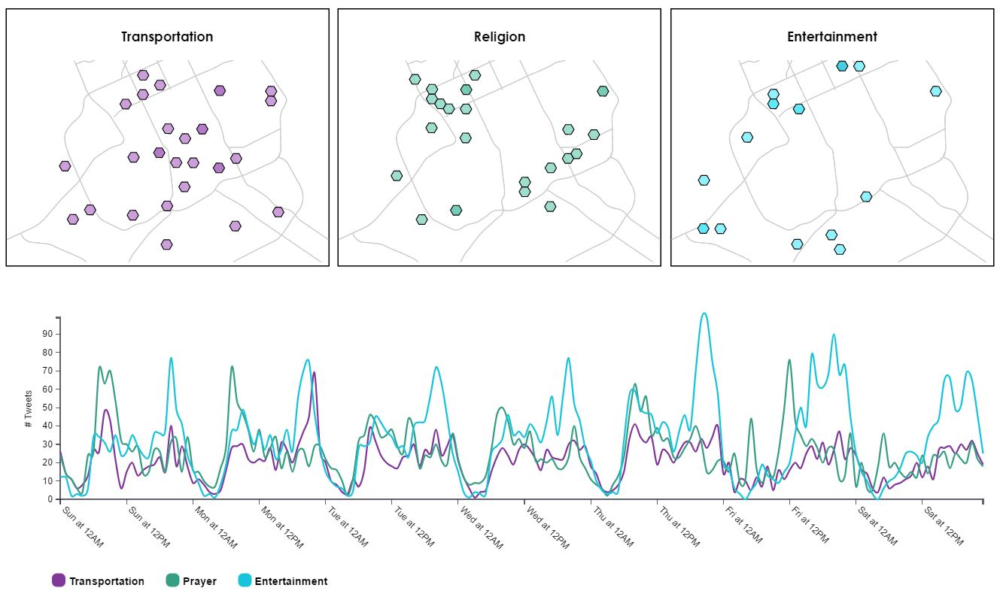
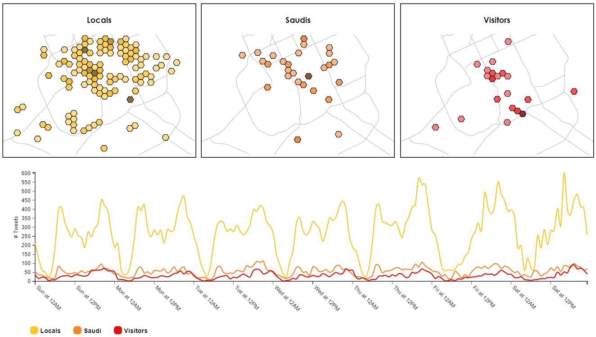

Welcome to Voices of Riyadh, an MIT class project by Luke Mich and Scott Margeson. We're Master's students in Urban Planning, and we've used a wide variety of our new coding skills to scrape, process and analyze a ton of social media data. We then created interactive web visualizations to reveal the underlying patterns. Click on the links above to try it yourself! We hope that our project will contribute to the transit planning conversation now taking place in the capital of Saudi Arabia.
Tweets
Analyzed
In class, we learned to use Python for scraping social media. We also accessed an existing 3-month collection of geo-located tweets harvested from Riyadh.
Lines of Code
Written
Not counting the many thousands of lines of experimental code that didn't make it into the final product.
Coding Languages
Learned
We used Python, JavaScript, HTML, and CSS, with a special focus on the Pandas library (for Python) and the D3 library (for JS). We knew none of these before starting the class.
Big Data Tools
Created
We visualized both tweet content and user origins. Our linked graph+map visuals allow exploration of both spatial and temporal patterns in the data.
Talking Transit
Planners in Riyadh are preparing to deploy a brand new public transit system. We wondered if we could tap into local sentiment about transportation by using our new data scraping skills. By revealing patterns in peoples' conversations about traffic and other aspects of city life, we hoped to provide a social context for those hoping to create a thoughtful transportation plan for the city.
Finding Patterns
We wrote Python code to search for keywords in the content of over a hundred thousand tweets from a 3-month period in the vicinity of Riyadh. We extracted the posts related to traffic. Out of curiosity, we also searched for posts related to religion and to entertainment, and then we sorted tweets according to the author's home location as well. Finally, we used D3 to visualize all the data on the web. Our project allows users to explore this trove of data to find both temporal and spatial patterns.
This map / graph combo lets you explore what people in Riyadh talk about on Twitter, along with when and where. Traffic was our primary interest. Click the image to try it for yourself.
This map / graph combo lets you explore the home location of people who are tweeting in Riyadh. Most are locals, but you can also see where visitors go. Click the image to try it out.
This beautiful animation of credit card transactions comes from MIT's Senseable Cities Lab. The visualization is colored by transaction category and covers the week before Easter 2011. Spatial and temporal patterns are clearly visible. For example, you can see the spikes in grocery shopping as the holiday approaches.
This interactive choropleth map illustrates the distribution of various tweet hashtags across New York City in the aftermath of Hurrican Sandy. This is an effective way to show the relative popularity of a given term throughout the city.
This series of maps shows the frequency of Uber routes over the street network of various cities - including Riyadh (pictured).
This website, the data visualizations, and the final code are © Luke Mich and Scott Margeson.
The code was inspired in part by Mike Bostock and other Bl.ocks coders like ASielen.
The dataset used was originally collected by Sarah Williams, Mike Foster and Carlos Sandoval.
The cover image is courtesy of flickr user Habeeb, released under a CC2.0 license.